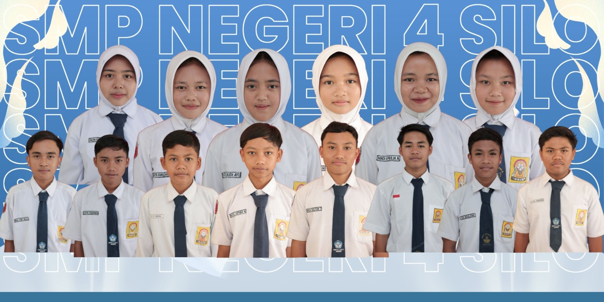

PENGUMUMAN KELULUSAN
SMPN 4 SILO - JEMBER
TAHUN AJARAN 2025/2026Masukkan NISN untuk cek hasil.
Nama Siswa
NISN:
Status Kelulusan
Pengumuman Resmi SMPN 4 Silo - Jember
Daftar Siswa Lulus
SMPN 4 Silo (T.A. 2025/2026)
Total Kelulusan: 0 Siswa
Made with 💔 by : em.rivki © 2026
INFORMASI KELULUSAN | SMPN 4 SILO - Kabupaten Jember
All Rights Reserved